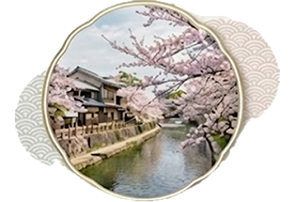
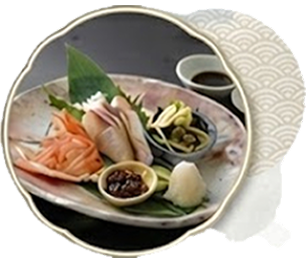

春の三国湊の風景写真
春だけの
特別な出会い
桜が咲き誇る丸岡城、新緑に包まれる雄島、そして日本海の春の味覚。三国湊の春は、一年で最も美しい季節です。
オーベルジュで味わう地元食材の創作料理、町家で過ごす静寂の時間。この季節だけの特別な体験が、あなたを待っています。
北前船が運んだ、文化の香り
江戸時代、北前船交易で栄えた三国湊。京都や大阪から運ばれた文化が、この地に独特の風情を残しました。
格子戸の町家が並ぶ路地、海風が運ぶ潮の香り、そして春になると桜が彩る静かな港町。ここには、時間がゆっくりと流れています。
婦人画報が選んだ、大人の女性に相応しい上質な滞在。季節の移ろいを感じながら、心を満たす旅をご提案します。

春の食の食材の写真